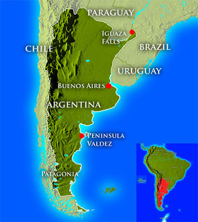

La Argentina, llamada oficialmente República Argentina,n 1 es un país soberano de América del Sur, ubicado en el extremo sur y sudeste de dicho subcontinente. Adopta la forma de gobierno republicana, democrática, representativa y federal.
La economía argentina es la segunda más desarrollada e importante en Sudamérica. Según el Banco Mundial, su PIB nominal es el 21. del mundo.17Debido a su importancia geopolítica y económica, es uno de los tres estados soberanos latinoamericanos que forma parte del denominado Grupo de los 20 e integra además el grupo de los NIC o nuevos países industrializados
Con una superficie de 2 780 400 km²,2 es el país hispanohablante más extenso del planeta, el segundo más grande de América Latina, y octavo en el mundo, si se considera solo la superficie continental sujeta a soberanía efectiva. Su plataforma continental, reconocida por la ONU en 2016, alcanza los 6 581 500 km²22 convirtiéndose en una de las más grandes del mundo, 23 extendiéndose desde el continente americano hasta el Polo Sur en la Antártida, a través de Atlántico Sur. Si se cuentan las islas Malvinas, Georgias del Sur, Sandwich del Sur y otras numerosas islas menores (administradas por el Reino Unido pero de soberanía en litigio), más una porción del área antártica llamada Antártida Argentina al sur del paralelo 60° S, sobre la cual Argentina reclama soberanía, la superficie se eleva a 3 761 274 km².24 Es uno de los veinte países que tienen presencia permanente en la Antártida, siendo entre ellos el que tiene mayor cantidad de bases permanentes, con seis bases en total.
Su territorio reúne una gran diversidad de climas, causada por una amplitud latitudinal que supera los 30° —incluyendo varias zonas geoastronómicas—, una diferencia en la altitud que va de 0 a casi 7000 msnm y la extensión del litoral marítimo que alcanza 4725 km. Amplias llanuras húmedas limitan con extensos desiertos y altas montañas, mientras que la presencia de climas tropicales y subtropicales en el norte, contrastan con las nevadas y fríos extremos en las zonas cordilleranas y el sur.
La Argentina está organizada como un Estado federal descentralizado, integrado desde 1994 por un Estado nacional y 24 estados autogobernados, que a su vez son 24 distritos electorales legislativos nacionales;1112 esto es 23 provincias y una ciudad autónoma designada como Capital del país. Cada estado autogobernado tiene autonomía política, constitución, bandera y cuerpo de seguridad propios. Las 23 provincias mantienen todos los poderes no delegados al Estado nacional y garantizan la autonomía de sus municipios.

Es uno de los únicos países del continente americano –junto a Estados Unidos y Canadá– que ha alcanzado óptimos niveles de Investigación y Desarrollo en el campo de las ciencias.19 Su capacidad tecnológica y científica le ha permitido diseñar, producir y exportar satélites,20 construir reactores nucleares y ser una potencia, aunque en los últimos años, su influencia se ha visto reducida debido a las transiciones internas que está sufriendo. Ha brindado una creciente cooperación nuclear a países de América Latina, el Magreb, el Golfo Pérsico, el sudeste asiático y Oceanía, a partir de las capacidades desarrolladas por la Comisión Nacional de Energía Atómica (CNEA) y por la prestigiosa empresa estatal INVAP.21 Es el país latinoamericano que más premios Nobel ha ganado —cinco en total—, tres de ellos vinculados con la ciencia.
Su territorio reúne una gran diversidad de climas, causada por una amplitud latitudinal que supera los 30° —incluyendo varias zonas geoastronómicas—, una diferencia en la altitud que va de 0 a casi 7000 msnm y la extensión del litoral marítimo que alcanza 4725 km. Amplias llanuras húmedas limitan con extensos desiertos y altas montañas, mientras que la presencia de climas tropicales y subtropicales en el norte, contrastan con las nevadas y fríos extremos en las zonas cordilleranas y el sur.